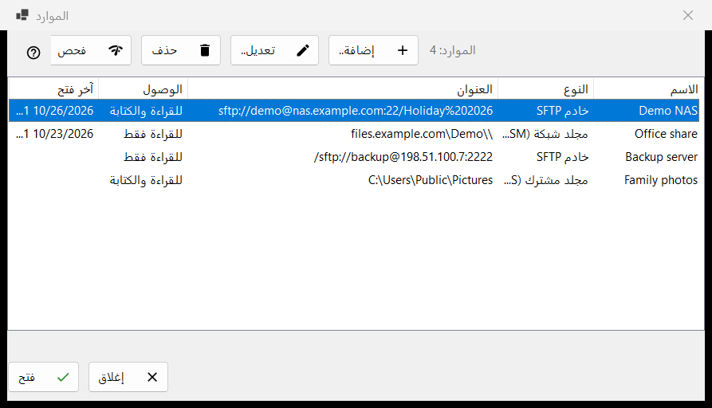
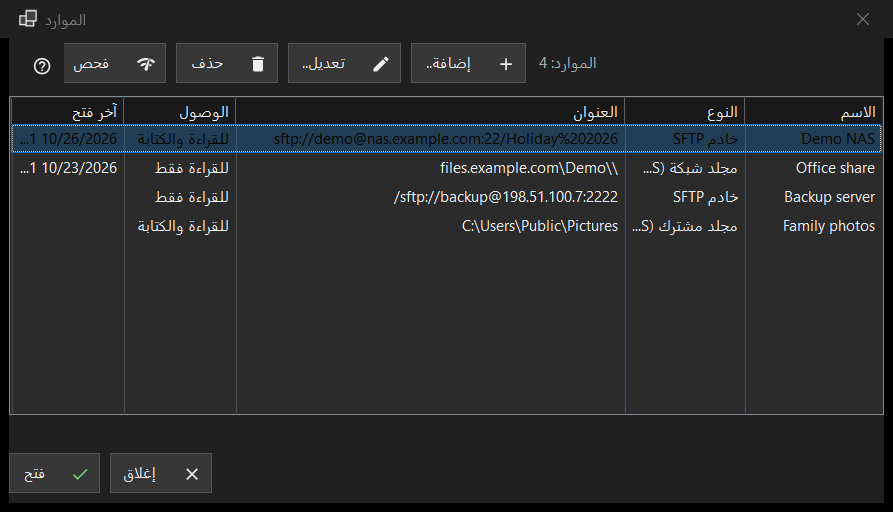

الموارد
الغرض من هذه النافذة
قائمة الخوادم والمجلدات الشبكية التي يستطيع العارض فتحها: خوادم SFTP ومجلدات شبكة Windows (SMB) والمجلدات التي يشاركها Share Manager من هذا الكمبيوتر. تُفتح من الأمر إدارة الموارد.. في قائمة المجلد؛ وتوجد القائمة نفسها في صفحة الخادم والموارد من نافذة الإعدادات.


بهذا الترتيب
- اضغط الزر إضافة.. واملأ بيانات الخادم، أو أحضر ملف إعدادات عبر الزر المزيد.
- حدّد الصف الجديد واضغط الزر فحص.
- اضغط الزر فتح، أو انقر الصف نقرًا مزدوجًا: يتصل العارض ويعرض مجلد الخادم.
- استخدم الزر تعديل.. لتغيير عنوان أو كلمة مرور، والزر حذف لنسيان مورد.
عناصر النافذة
القائمة
الأعمدة: الاسم، النوع، العنوان، الوصول، آخر فتح. النوع هو خادم SFTP أو مجلد شبكة (SMB) أو مجلد مشترك (Share Manager)؛ ويذكر الوصول للقراءة فقط أو للقراءة والكتابة. يعدّ سطر تحت القائمة الموارد، وعند عدم وجود أي مورد تعرض النافذة تلميحًا وزرًا (إضافة..). تحتاج الأزرار تعديل.. وحذف وفحص (وفتح في الصف السفلي من نافذة الموارد) إلى صف محدد؛ وقبل ذلك يقول تلميحها: حدد موردًا في القائمة أولاً
إضافة.. وتعديل..
الزر إضافة.. يفتح نموذج مورد جديد، والزر تعديل.. يفتح نموذج المورد المحدد. كلمة المرور المكتوبة هناك تُخزَّن مشفّرة لحساب Windows الخاص بك، ولا تُحفظ أبدًا في القائمة نفسها.
حذف
يسأل الزر حذف أولاً، والجواب الافتراضي هو لا. يذكر السؤال اسم المورد ويقول إن كلمة المرور المحفوظة له تُحذف أيضًا، بينما لا تتأثر الملفات الموجودة على الخادم.
فحص
يختبر الزر فحص الصف المحدد دون فتحه. بالنسبة إلى خادم SFTP يجرّب كل عنوان معروف للمورد ويبلّغ عن كل عنوان بصيغة host:port مع حكم: ردّ SSH حي واحد يجعل الفحص ناجحًا، ومنفذ مفتوح ليس SSH تحذير، والصمت فشل. لا تُرسَل أي كلمة مرور. بالنسبة إلى مجلد شبكة يفتح المشاركة بكلمة المرور المحفوظة ويقرأ مجلدها الأعلى؛ وإذا لم تكن كلمة مرور محفوظة فإنه يطلب منك إدخال واحدة عبر الزر (تعديل..). وبالنسبة إلى صف Share Manager فإنه ينظر فقط هل المجلد موجود على هذا الكمبيوتر.
فتح
الزر فتح، أو النقر المزدوج على صف، يسلّم المورد إلى العارض الذي يتصل ويعرض مجلده. إذا لم تكن كلمة مرور محفوظة، أو رُفضت المحفوظة، تطلبها نافذة صغيرة أولاً.